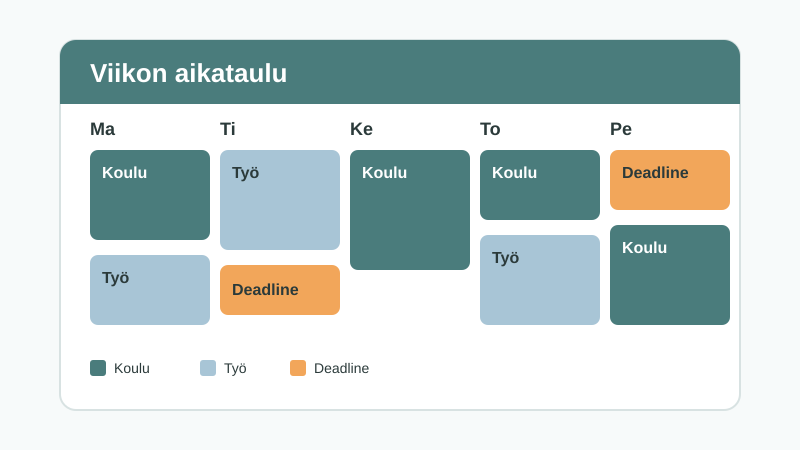

Arkifiksu kokoaa koulun, työn ja deadlinet yhteen näkymään
Entä jos viikon aikataulun näkisi yhdellä silmäyksellä? Arkifiksu tekee arjesta selkeämpää ja vähentää stressiä.

Miksi Arkifiksu syntyi?
Moni opiskelija yhdistää koulun ja työn. Tehtävien palautuspäivät ovat yhdessä paikassa, työvuorot toisessa ja koulupäivät kolmannessa. Kun kaikkea ei näe kerralla, on helppo unohtaa jotain tärkeää.
Rauhallinen arki alkaa siitä, että tietää, mitä on tulossa.
Mitä palvelu tekee?
Arkifiksussa on kolme pääasiaa:
- Etusivu näyttää päivämäärän, kellonajan sekä päivän koulun tai työvuoron.
- Kalenteri kokoaa viikon deadlinet, työvuorot ja koulupäivät yhteen.
- Muistutus ilmoittaa kiireellisestä deadlinesta.